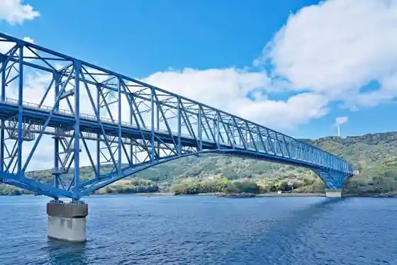
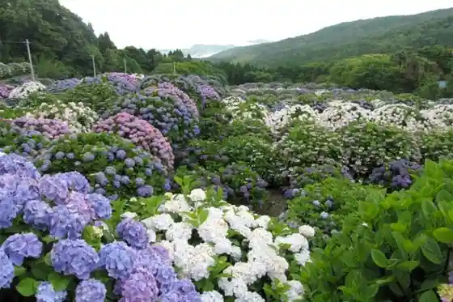
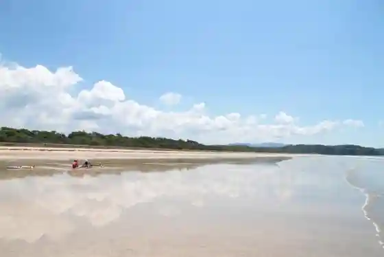
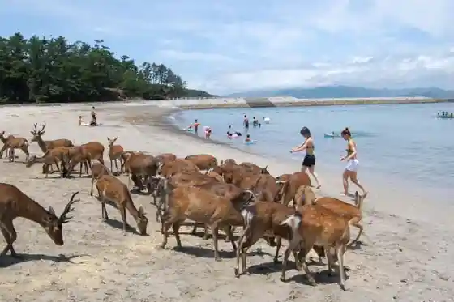

Kuro Yuki Seto Kuro Yuki Seto Bridge
Akune, Kagoshima · 0996-73-1114 · Official / source link

Kasayama Tourist Farm
Akune, Kagoshima · 0996-73-1114 · Official / source link

Wakimoto Beach
Akune, Kagoshima · 0996-73-1114 · Official / source link

Akune Onsen
Akune, Kagoshima · 0996-73-1114 · Official / source link
Akune Oshima Campground
Akune, Kagoshima · 0996-72-5920 · Official / source link

Bansho Oka Park
Akune, Kagoshima · 0996-73-3777 · Official / source link
Okawa Shima Beach
Akune, Kagoshima · 0996-73-1114 · Official / source link
Ushi Yuki Hama Coast
Akune, Kagoshima · 0996-73-1114 · Official / source link
Roadside Station Akune
Akune, Kagoshima · 0996-73-1114 · Official / source link
Iso no Aji Kuro Yuki Seto
Akune, Kagoshima · 0996-75-0023 · Official / source link
O Shokuji no Furusato Jusan
Akune, Kagoshima · 0996-72-1420 · Official / source link
Akune Oshima Park
Akune, Kagoshima · 0996-73-1114 · Official / source link
Nigiwai Koryu Kan Akune Eki
Akune, Kagoshima · 0996-73-4850 · Official / source link
Sunset&Coffee (Roadside Station Akune)
Akune, Kagoshima · 0996-74-1400 · Official / source link
Iwashibiru
Akune, Kagoshima · 0996-73-3104 · Official / source link
Kimiyoshi Onsen
Akune, Kagoshima · 0996-72-1174 · Official / source link
Terashima Munenori Memorial Museum
Akune, Kagoshima · 0996-73-1114 · Official / source link
Somen Nagashi Ono Iori
Akune, Kagoshima · 0996-79-2130 · Official / source link
Terasukafe Sora
Akune, Kagoshima · 0996-68-1110 · Official / source link
Farm Garden Sora
Akune, Kagoshima · 0996-73-3685 · Official / source link
SUP Experience (wag Teiru (Waguteiru))
Akune, Kagoshima · 080-5802-4872 · Official / source link
Uni Kara Ato Experience (Akune Chiiki Okoshi Kyoryoku Tai, Machi no Lighthouse Akune)
Akune, Kagoshima · 0996-72-3646 · Official / source link